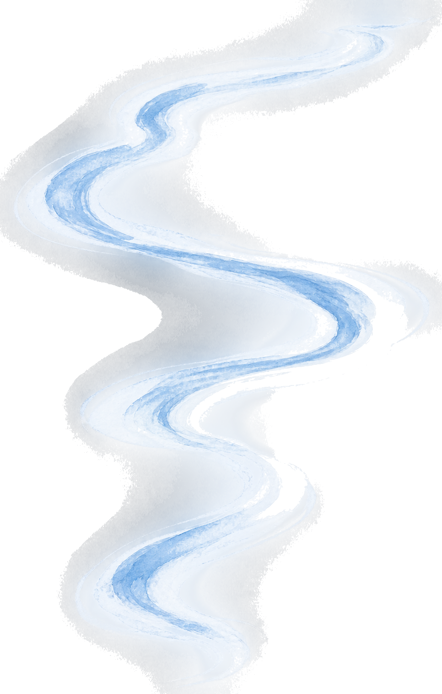

👋 Hey, glad you're here. I'm Alexandra, a senior UX researcher based in the SF Bay Area.
3.0 — watercolor wake
Senior UX Researcher/Manager
From insights to influence
9+ Years
100+ Studies
1000+ Participants

01
02
03
04
I lead strategic research in complex systems where trust is the product: security, privacy, and now AI.

Trained in experimental science, I bring a lab scientist's rigor to a very human question: what experience should we build, and why?


I shape trustworthy AI experiences by uncovering how people form and calibrate trust, understand system behavior, and decide when to take control.
trust calibration & explainability
trust calibration & explainability
I design studies that reveal how people assess, interpret, and build appropriate trust in AI systems.
mental models & system understanding
I uncover how users form mental models of complex systems—and where those models break down.
agency & control
I explore how people decide when to rely on, override, or opt out of AI—and what helps them feel in control.
I lead iterative research to define scalable UX architecture when complex product systems outgrow their legacy structure.
product systems & convergence
google express → google shopping
Foundational and concept-validation research as Express folded into the new Shopping tab.
information architecture redesign
Converged four standalone products into one coherent app, with mental model research defining the unified structure.
complex workflow & platform modernization
Untangled task flows, navigation, and information structures in a fragmented enterprise console into one actionable system.
I turn ambiguous ideas into validated product direction, from early exploration through launch.
0→1 builds
concept-to-launch research
Defined target users, unmet needs, value propositions, and launch experience for a net-new consumer privacy product.
ai-native product discovery & build
A researcher who ships—from pain point to vision to working product—using the same strategy-first discipline I bring to enterprise work.
I turn fragmented customer insights into an omnichannel UX strategy that aligns XFN teams around one shared experience and product vision.
research influence
cross-functional product collaboration
Brought stakeholders directly into research, deepening buy-in on findings and strengthening empathy for the end user.
cross-craft UX leadership
Led multidisciplinary UX work while growing the research team from 2 to 5 and establishing more consistent research operations.
self-serve research infrastructure
Turned years of recruiting data plus a live pipeline into a self-serve dashboard used across the Ads org.